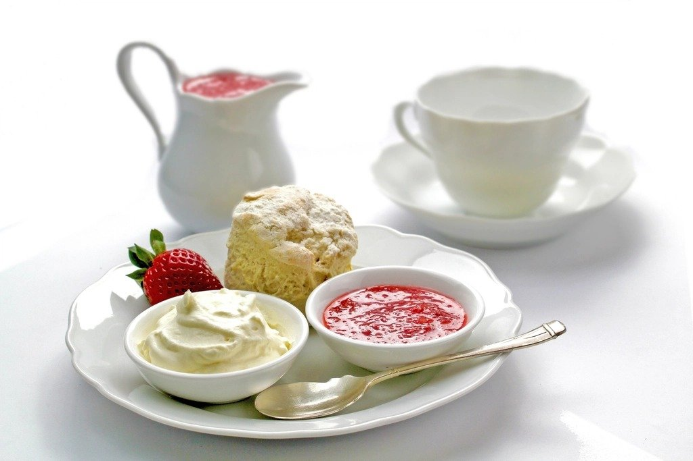

※掲載している写真はイメージ（フリー素材）です。実店舗の写真ではありません。
ひとつひとつ丁寧に焼き上げる、自家製パンとスコーン
当店では、パンやスコーンを一品ずつ丁寧に焼き上げています。手作りならではの温かみのある味わいと香りを、ぜひ店内でお楽しみください。数に限りがあるため、ご用意できる時間が限られる点はあらかじめご了承ください。
BREAD & SCONE
自家製パン・焼き菓子メニュー
DRINK
ゆったりとした時間に寄り添う、2種のドリンク

ご注意
- 食事系メニューは数に限りがございます。売り切れの際はご容赦ください。
- ご予約は承っておりません。
- お支払いは現金のみとなります（Cash Only）。
ご来店にあたっての詳しいご案内は、アクセス・ご利用案内ページをご覧ください。
アクセス・ご利用案内を見る